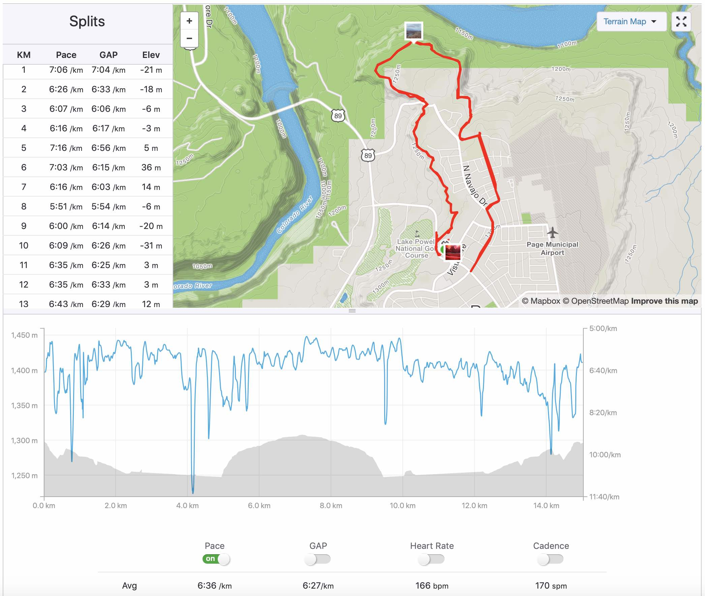
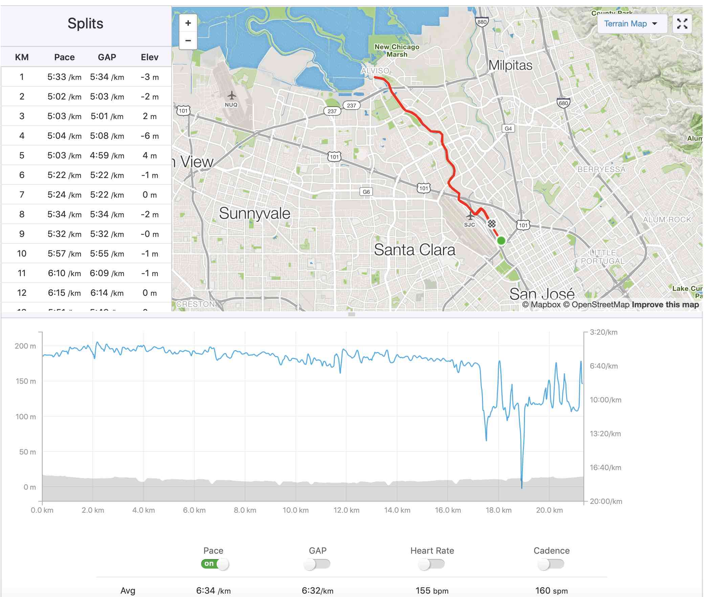
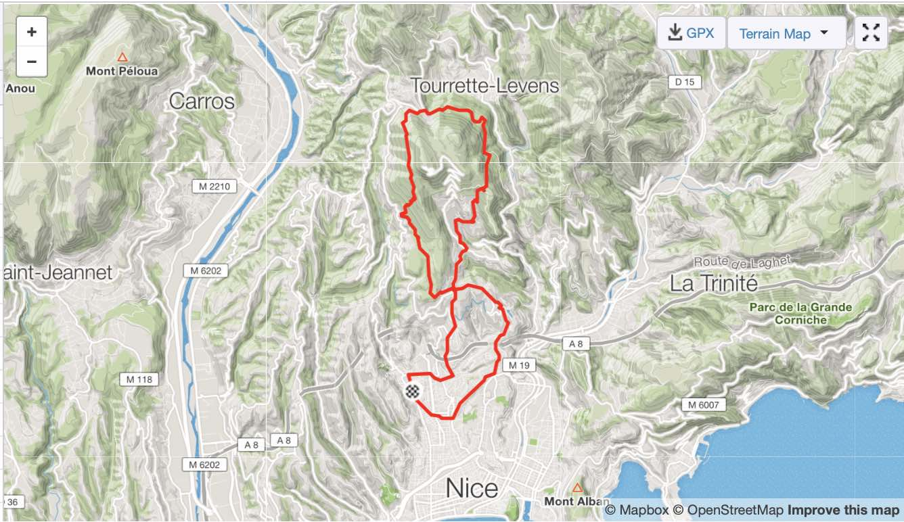
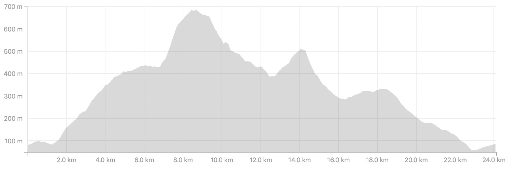

Route Towards The Half-Marathon a.k.a. Pain
A message of hope
I perceived my first 10km as a message of hope towards greater things in general, and longer distances in particular. But, somehow, I misread the message, it was more like:
Sadly, pain was the main outcome of my next weeks of training, and my theory of being unstoppable was kind of wrong…
To be more specific, never a theory was that wrong…
Except maybe the
String Theory,
but it is kind of different,
the String Theory is
not even wrong
…
But let’s forget of the String Theory for now.
The practice
My first 10k ever was on July the 22nd, and it took me about two months to reach painfully 15km. Fun fact, I finally managed to get to 15km on a trail in Page, Arizona,
at about 1250m above the sea level. And I have to admit that it was a lot of fun! Yes the pace was slow, but the landscape was gorgeous! 
And, on week after, I got my first half-marathon run in Palo Alto, California,
but this time, at sea level.

You may notice that I started way too strong, and I actually finished the run walking… But again, the good thing is that there is definitely room for improvement!
When Bergamot drops a bomb
In October 2018, Bergamot was in need of strong sensations. And to fill his need, he decided to run. But not a regular run, he went for the crazy 8 (the route looks like an eight and the distance is crazy!):
- 24km of distance

- 860m of ascent

The reaction what two-fold:
1- The first flow of reactions were very supportive:
- Congratulations Bergamot!!!!
- Is it really impressive!!!!
2- The second flow of reactions were a little bit more rough:
- ARE YOU CRAZY!!!!
- WHAT’S WRONG WITH YOU!!!!
At this moment, he innocently tells the Dream Team:
“A little trail of 30km, 40km in the mountain is kind of tempting, don’t you think?”
The explosion
This comment was followed by silence.
- Bergamot napped.
- Chamomile made some tea to forget this madness.
- Barbie Girl drunk few cosmopolitan cocktails to calm down.
- Aurélia engraved her shopping list in a marble plate. She was born in BC remember?
- Rambo Chérie went clay pigeon shooting to find inner peace.
- and the Muffin Man looked for trail races…
And the bomb exploded:
Guys, I found a pretty cool trail!
It is just a half-marathon with a teeny-tiny of ascent… 1100m, the
UTMC!
I already registered! You are also coming right?!
And, after napping, drinking tea, engraving shopping lists in marble, and clay pigeon shooting, the Dream Team signed up for this!!!